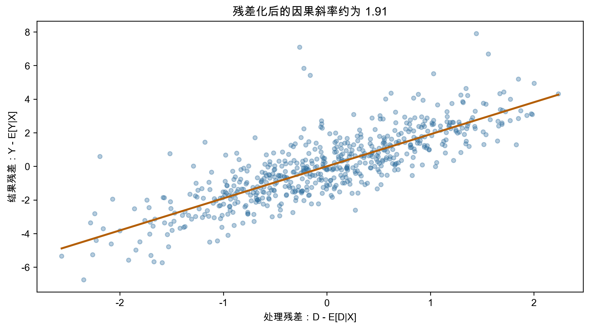

第 5 周：因果机器学习——高维控制、双重/去偏机器学习与异质性效应
中国人民大学商学院
2026-05-22
从现代 DiD 到因果机器学习
本节课的问题
机器学习能否帮助我们估计因果效应，而不是只做更好的预测？
六个模块
预测问题
给定特征 X，学习一个函数 \hat{f}(X)，使测试集预测误差尽可能小：
\min_{\hat{f}} E[(Y-\hat{f}(X))^2]
在课堂上可以把预测理解为“尽量猜准 Y”。它允许模型使用任何能提高预测力的信息，但不自动关心这些信息是在处理前还是处理后出现。
典型评估方式：
因果问题
我们关心的是处理变量 D 对结果 Y 的影响：
\tau = E[Y(1)-Y(0)]
或异质性处理效应：
\tau(x)=E[Y(1)-Y(0)\mid X=x]
预测好 Y 不等于识别了 D 的因果效应。因果推断要问的是：在可比个体之间，如果只改变 D，Y 会如何变化？
高预测力变量可能是坏控制
如果某个变量是处理之后才发生的中介变量，加入模型会提高预测能力，但会阻断部分因果路径。
因果建模的第一步不是“把所有变量丢进模型”，而是区分变量在时间顺序和因果图中的位置：
| 变量类型 | 是否应控制 |
|---|---|
| 处理前混杂变量 | 通常应控制 |
| 处理后中介变量 | 通常不应控制总效应 |
| 碰撞变量 | 控制后可能引入偏误 |
| 工具变量 | 用于处理内生性，不是普通控制 |
不是替代识别，而是增强估计
识别假设仍然来自研究设计：
(Y(1),Y(0)) \perp D \mid X
当控制变量很多，甚至 p \gg n：
Y = X'\beta + \varepsilon
普通最小二乘法(OLS)可能无法估计，或者严重过拟合。经验研究中的高维通常不是“原始变量很多”这么简单，而是研究者构造了大量交互项、固定效应组合、文本特征或历史窗口变量。
近似稀疏
真实模型未必严格只有少数变量有用，但重要系数经过排序后快速衰减。有限个关键变量可以很好近似条件期望函数。
最小绝对收缩与选择算子(Least Absolute Shrinkage and Selection Operator, LASSO)通过 \ell_1 惩罚控制复杂度：
\hat{\beta}_{LASSO} = \arg\min_b \sum_{i=1}^n (Y_i-X_i'b)^2 + \lambda \sum_{j=1}^p |b_j|\hat{\psi}_j
LASSO 做了两件事
它的代价是引入一定偏差；它的好处是在高维情况下换来更低的方差和更稳定的预测。
惩罚参数 \lambda 控制拟合与复杂度的取舍：
| \lambda | 结果 |
|---|---|
| 很小 | 接近 OLS，可能过拟合 |
| 适中 | 保留重要变量，压缩噪声变量 |
| 很大 | 模型过于简单，可能欠拟合 |
提示
预测场景
可以用交叉验证选择 \lambda，目标是样本外预测表现。
LASSO 的收缩会带来系数偏差。事后 LASSO 的做法是：
\hat{\beta}_{post} = \arg\min_{\beta_j=0, j\notin \hat{S}} \sum_{i=1}^n (Y_i-X_i'\beta)^2
变量选择后的推断
先看数据再选模型，会改变标准误和置信区间的含义。因果推断中不能把变量选择后的 OLS 当作普通 OLS。
考虑部分线性模型：
Y = \theta D + g(X) + \varepsilon
如果 X 很高维，LASSO 可用于估计 g(X)。但这里的重点不是解释每个控制变量的系数，而是尽量吸收 X 对 Y 的可预测部分。
但还有一个处理方程：
D = m(X) + v
只选择预测 Y 的变量可能漏掉预测 D 的混杂变量。
Belloni-Chernozhukov-Hansen 思路
这样做的目标不是获得最简模型，而是降低遗漏混杂变量的风险。
直觉上，某个变量即使对 Y 的直接预测力不强，也可能强烈影响 D；漏掉它会让处理变量仍然带着混杂信息。
双重/去偏机器学习(Double/Debiased Machine Learning, DML)最常见的入口是部分线性模型：
Y = \theta_0 D + g_0(X) + U,\quad E[U\mid X,D]=0
D = m_0(X) + V,\quad E[V\mid X]=0
目标是 \theta_0，而 g_0(X) 和 m_0(X) 是干扰函数：它们本身不是研究对象，但估计不好会影响 \theta_0。
先用机器学习预测掉 X 的影响：
\tilde{Y}=Y-\hat{g}(X)
\tilde{D}=D-\hat{m}(X)
再回归：
\tilde{Y} = \theta_0 \tilde{D} + \text{error}
Frisch-Waugh-Lovell 的机器学习版本
用灵活模型替代线性投影，但最终识别仍来自处理变量中不能被 X 预测的那部分变化。
这页的课堂重点是“先净化，再比较”：先把 Y 和 D 中都能由控制变量解释的部分拿掉，再看剩下的共同变化。

DML 使用正交分数：
\psi(W;\theta,\eta) = \left(Y-g(X)-\theta[D-m(X)]\right) \left(D-m(X)\right)
正交性意味着：
\partial_{\eta} E[\psi(W;\theta_0,\eta)]\big|_{\eta=\eta_0}=0
提示
直觉
干扰函数估计得不完美时，\theta 的一阶偏误被削弱。
这并不是说机器学习模型可以随便估计；它的含义是，只要误差收敛得足够快，DML 可以让因果参数对这些误差不那么敏感。
为什么要切分样本
如果同一批数据既训练机器学习模型，又用来估计因果参数，过拟合会把噪声带入残差。
交叉拟合：
DML 的关键词：正交化 + 交叉拟合。
平均处理效应：
\tau = E[Y(1)-Y(0)]
异质性处理效应：
\tau(x)=E[Y(1)-Y(0)\mid X=x]
管理与经济问题
政策对哪些企业更有效？补贴对哪些消费者更敏感？培训对哪些员工回报更高？
经营和政策实践中，平均值往往只是起点。真正的管理问题通常是：有限资源应该优先给哪一类对象？
树模型把特征空间切成区域：
R_1,R_2,\ldots,R_J
每个叶节点给出局部预测。
随机森林通过自助抽样和随机变量子集构造许多树，再平均预测：
\hat{f}_{RF}(x)=\frac{1}{B}\sum_{b=1}^{B}\hat{f}^{(b)}(x)
不是预测 Y，而是寻找处理效应不同的区域
普通树按预测误差分裂；因果森林按处理效应差异分裂。
每个叶节点中，比较处理组和控制组的局部差异：
\hat{\tau}(x) \approx \bar{Y}_{treated, leaf(x)} - \bar{Y}_{control, leaf(x)}
实际算法会加入倾向得分调整、正交化和诚实抽样。
诚实抽样
一部分样本用来决定树的分裂结构，另一部分样本用来估计叶节点内的处理效应。
这样做牺牲一点预测效率，换来更可信的推断：
可以把诚实抽样理解为课堂考试中的“出题”和“阅卷”分开：前一部分样本负责找分组规则，后一部分样本负责估计这些分组中的效应。
不要过度讲故事
因果森林输出的变量重要性和异质性曲线是诊断工具，不是自动生成的机制解释。
报告异质性处理效应时应回答：
糖尿病数据集演示
使用 scikit-learn 内置糖尿病数据。为了演示 DML，把“身体质量指数是否高于中位数”作为处理变量，疾病进展指标作为结果，其他健康指标作为控制变量。
解释边界
这是教学用观察性案例。DML 能降低高维控制和非线性带来的估计偏误，但不能自动证明处理是外生的。
from sklearn.datasets import load_diabetes
from sklearn.ensemble import RandomForestRegressor, RandomForestClassifier
from econml.dml import LinearDML
import statsmodels.api as sm
data = load_diabetes(as_frame=True)
df = data.frame.copy()
Y = df["target"].to_numpy()
D = (df["bmi"] > df["bmi"].median()).astype(int).to_numpy()
X = df.drop(columns=["target", "bmi"])ols_naive = sm.OLS(Y, sm.add_constant(D)).fit(cov_type="HC3")
ols_controls = sm.OLS(Y, sm.add_constant(
pd.concat([pd.Series(D, name="D"), X], axis=1)
)).fit(cov_type="HC3")
dml = LinearDML(
model_y=RandomForestRegressor(n_estimators=100, min_samples_leaf=10),
model_t=RandomForestClassifier(n_estimators=100, min_samples_leaf=10),
discrete_treatment=True,
cv=5,
random_state=42
)
dml.fit(Y, D, X=X)
print(dml.ate(X=X), dml.ate_interval(X=X))三步解释
因此 DML 的处理效应来自：
D - \hat{E}[D\mid X]
而不是原始的 D。
课堂解读时要提醒学生：如果处理变量本身缺乏可解释的外生变化，残差化也不能凭空创造识别。
可以让人工智能加速的任务
但所有候选变量都必须标注：处理前、处理后、中介、碰撞、工具变量或结果代理。课堂上应把这一点讲成“变量进入模型前先过因果审计”。
最低审计要求
从异质性处理效应到结构原语
机器学习估计的 \hat{\tau}(x) 可以提示异质性在哪里；结构模型要进一步解释这些异质性来自什么原语。
例子：
三句话
下节课：结构估计基础，把异质性、选择和反事实放进明确的经济决策系统。